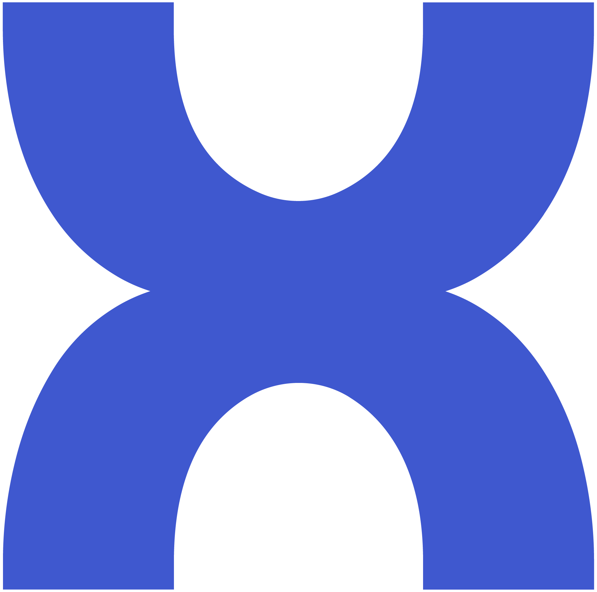
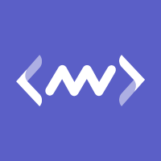

Work Experience

Founding Member
Caylex AI
June 2025 - Present
- Building high-performance infrastructure for enriching and optimizing context for AI agents
- Leading technical strategy and product development initiatives
- Driving vision and execution for solving common pain points in for Agent vendors
- Building foundational AI infrastructure and scalable architectures for MCP-based systems

Head of Engineering
Middleware Lab Inc (YC W23)
June 2023 - May 2025
- Building and leading an engineering organization of 35 engineers to develop AI-enabled observability platform
- Driving strategy, vision, and execution to build next-generation AI-powered observability platform for cloud-native workloads
- Player-Coach & Hands-on working with engineers to drive engineering best practices for producing high-quality products
- Presenting at industry events like ClickHouse meetups on petabyte-scale observability
Senior Software Engineer
Netflix
April 2019 - May 2023
- Improved Netflix viewing experience by optimizing cloud network infrastructure
- Worked on AWS Security, VPC, Network Insight, DNS, Cloud Infrastructure Abstraction, and Kubernetes
- Developed scalable solutions for Netflix's global streaming platform
- Contributed to the reliability and performance of Netflix's cloud infrastructure
Tech Lead
DigitalOcean
July 2016 - April 2019
- Led team of engineers to design and implement scalable cloud load balancer service
- Utilized Go programming (Golang), Open vSwitch, KVM, libvirt, Docker, Kubernetes, and Ansible
- Contributed to DigitalOcean's cloud computing products before their IPO in March 2021
- Implemented performance optimizations for cloud services
Staff Software Engineer
A10 Networks
March 2013 - July 2016
- Worked on overlay tunneling features to support A10's SDN solution
- Developed Multi-Device Load Balancer SCALE-OUT architecture for elastic scaling
- Designed and developed efficient Trie-based policy lookup algorithm for Stateful Data Center Firewall
- Integrated Firewall with other features like L4/L7 Server Load Balancing & NAT
Software Engineer
Cisco Systems Inc
August 2006 - February 2013
- Designed and developed Virtual LAN (802.1Q), Private Virtual LAN (PVLAN) & Switched Virtual Interface (SVI) features for Cisco Nexus 7000 series switches
- Extended features to support technologies like Ethernet Virtual Circuit (EVC), Layer 2 VPN, FabricPath, and Virtual Port Channels
- Enhanced Fabric Shortest Path First (FSPF) protocol for supporting hitless software upgrades on MDS 9500 fibre channel storage switch
- Filed multiple patents on Fibre Channel Routing
Software Engineer
Blue Coat Systems Inc
June 2005 - August 2006
- Developed new features in HTTP, ICAP, and FTP kernel modules in C++ for proxy appliances
- Integrated ICAP protocol with FTP for content filtering and virus scanning
- Implemented logging features in ICAP and FTP protocols